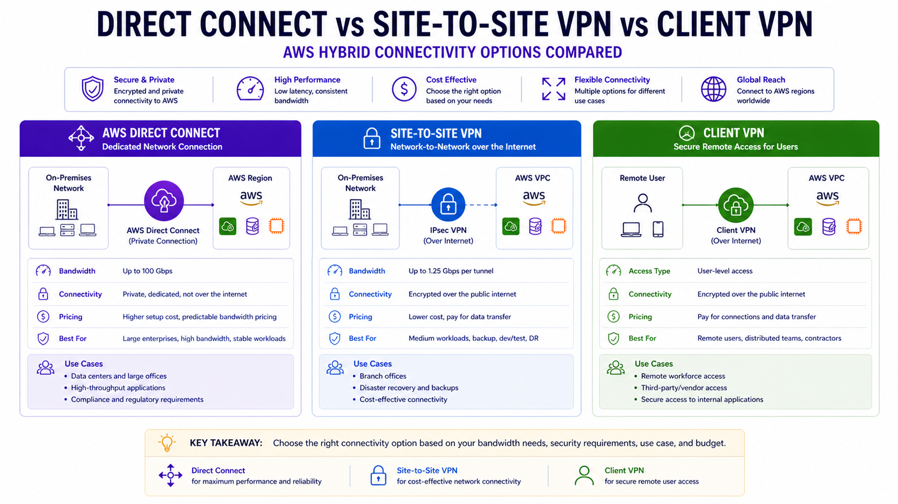

Direct Connect vs Site-to-Site VPN vs Client VPN
AWS Networking Series | Part 6 — Building secure, cost-optimised, cloud-native infrastructure on AWS

TL;DR Comparison
| Feature | AWS Direct Connect | Site-to-Site VPN | Client VPN |
|---|---|---|---|
| Connection type | Dedicated physical line | IPSec tunnel over internet | TLS tunnel per user |
| Who connects | Data center / office | Network to network | Individual users/devices |
| Bandwidth | 1 Gbps – 100 Gbps | Up to 1.25 Gbps per tunnel | Up to 10 Gbps aggregate |
| Latency | Consistent, low (~1-5ms) | Variable (internet-dependent) | Variable (internet-dependent) |
| Encryption | Optional (MACsec) | Always (AES-256) | Always (TLS 1.2+) |
| Setup time | Weeks to months | Minutes to hours | Hours |
| Cost | $$$ (port + data transfer) | $ (hourly + data transfer) | $$ (per connection hour) |
| BGP routing | ✅ Required | ✅ Optional (static or BGP) | ❌ Not applicable |
| High availability | Active/Active or Active/Passive | Dual tunnels per connection | Multi-AZ endpoints |
| Best for | Production enterprise workloads | Dev/test, DR, VPN backup | Remote workforce, contractors |
Introduction
Every enterprise AWS journey eventually reaches the hybrid connectivity question: how do your on-premises systems, data centers, and remote workers securely connect to your AWS infrastructure?
There are three AWS-native answers — Direct Connect, Site-to-Site VPN, and Client VPN. They are not interchangeable. Using Site-to-Site VPN for a production database replication workload will give you unpredictable latency and jitter. Using Direct Connect for a small dev team's remote access will cost 10x what you need to spend. And running neither in high availability will give you an outage at the worst possible time.
In this post we go deep on all three — how each works at the protocol level, when each is the right choice, how to build them properly in Terraform, how to combine them for true resilience, and what each actually costs.
1. AWS Direct Connect — The Dedicated Private Line
How It Works
Direct Connect is a dedicated physical network connection between your on-premises data center and an AWS Direct Connect location (a colocation facility). Your traffic flows over a private line — never touching the public internet.
Your Data Center
→ Your Router
→ Cross-connect (physical cable in the DX location)
→ AWS Direct Connect Router
→ AWS Backbone
→ Your VPC / TGWThe connection is established using BGP (Border Gateway Protocol) — the same routing protocol that runs the internet. Your router and the AWS router exchange route advertisements over the BGP session, so routes are learned dynamically rather than configured statically.
Virtual Interfaces — The Three Types
A physical Direct Connect port is shared across multiple logical connections via Virtual Interfaces (VIFs). Understanding the three VIF types is fundamental:
| VIF Type | Routes to | Use case |
|---|---|---|
| Private VIF | Single VPC via VGW | Direct access to one VPC |
| Transit VIF | TGW | Access to many VPCs via Transit Gateway |
| Public VIF | All AWS public IPs globally | Access to AWS public services (S3, DynamoDB) without internet |
For enterprise multi-VPC architectures, Transit VIF → TGW is always the right answer. Private VIF forces one VIF per VPC — that doesn't scale.
Direct Connect Gateway — Multi-Region Access
A Direct Connect Gateway (DXGW) lets a single DX connection reach VPCs in multiple AWS regions — without separate connections per region:
Data Center → DX Connection → DXGW → TGW eu-west-1 → EU VPCs
→ TGW us-east-1 → US VPCs
→ TGW ap-southeast-1 → APAC VPCs# Direct Connect Gateway
resource "aws_dx_gateway" "main" {
name = "org-dx-gateway"
amazon_side_asn = "64512"
}
# Associate DXGW with TGW in eu-west-1
resource "aws_dx_gateway_association" "eu_tgw" {
dx_gateway_id = aws_dx_gateway.main.id
associated_gateway_id = aws_ec2_transit_gateway.eu.id
# Prefixes your TGW will advertise back to on-premises via BGP
allowed_prefixes = [
"10.0.0.0/8", # All internal VPC CIDRs
"172.16.0.0/12",
]
}
# Associate DXGW with TGW in us-east-1
resource "aws_dx_gateway_association" "us_tgw" {
dx_gateway_id = aws_dx_gateway.main.id
associated_gateway_id = aws_ec2_transit_gateway.us.id
allowed_prefixes = [
"10.0.0.0/8",
"172.16.0.0/12",
]
}Hosted vs Dedicated Connections
| Dedicated Connection | Hosted Connection | |
|---|---|---|
| Bandwidth | 1G, 10G, 100G | 50M – 10G |
| Port ownership | You own the port | AWS Partner owns the port |
| Lead time | Longer (physical provisioning) | Faster (partner pre-provisioned) |
| VIF limit | 50 VIFs per port | 1 VIF per hosted connection |
| Cost | Higher fixed | Pay-as-you-go |
| Best for | Large enterprise, predictable high bandwidth | Getting started, variable needs |
For most enterprises, start with a Hosted Connection via an AWS Partner to validate the DX use case — then migrate to a Dedicated Connection once bandwidth and ROI are proven.
MACsec — Layer 2 Encryption
By default, Direct Connect is not encrypted — it's a private line but not cryptographically protected. For regulated industries (financial services, healthcare), enable MACsec (IEEE 802.1AE) for hardware-level Layer 2 encryption:
# MACsec key — must be pre-shared with your router
resource "aws_dx_macsec_key_association" "main" {
connection_id = aws_dx_connection.main.id
ckn = var.macsec_ckn # Connectivity Association Key Name (hex)
cak = var.macsec_cak # Connectivity Association Key (hex)
}
resource "aws_dx_connection" "main" {
name = "prod-dx-connection"
bandwidth = "10Gbps"
location = "EqAM2" # Equinix Amsterdam — AWS DX location code
request_macsec = true # Request MACsec capability on the port
tags = { Name = "prod-dx-10g" }
}Architect's Note
MACsec is only available on Dedicated Connections of 10 Gbps and above. It is not available on Hosted Connections. For maximum security, combine MACsec (Layer 2) with IPSec over the DX Public VIF (Layer 3) — a dual-layer encryption pattern used in financial services.
High Availability — Always Two Connections
A single Direct Connect connection is a single point of failure at the physical layer. AWS recommends — and enterprises should always implement — one of these HA patterns:
Pattern 1: Dual DX (Maximum Resilience)
Data Center Router A → DX Location 1 → AWS
Data Center Router B → DX Location 2 → AWS (different DX location)Pattern 2: DX Primary + VPN Backup (Cost-Optimised)
Data Center → DX Connection (primary, all traffic)
Data Center → Site-to-Site VPN (backup, activates on DX failure via BGP)Pattern 2 is the most common enterprise choice. The VPN sits idle (minimum cost) and BGP automatically fails traffic over if the DX BGP session drops:
# Primary: DX with higher BGP priority (lower MED value)
resource "aws_dx_transit_virtual_interface" "primary" {
connection_id = aws_dx_connection.main.id
name = "transit-vif-primary"
vlan = 100
address_family = "ipv4"
bgp_asn = 65000 # Your on-premises ASN
dx_gateway_id = aws_dx_gateway.main.id
# BGP community to set lower MED — preferred route
bgp_auth_key = var.bgp_auth_key
}
# Backup: VPN with lower BGP priority (higher MED value)
# Traffic only flows here if DX BGP session drops
resource "aws_vpn_connection" "backup" {
vpn_gateway_id = aws_vpn_gateway.main.id
customer_gateway_id = aws_customer_gateway.main.id
type = "ipsec.1"
static_routes_only = false # Use BGP
tags = { Name = "dx-backup-vpn" }
}2. Site-to-Site VPN — Encrypted Network-to-Network Connectivity
How It Works
Site-to-Site VPN creates an IPSec encrypted tunnel between your on-premises network and AWS. Unlike Direct Connect, traffic flows over the public internet — but is cryptographically protected with AES-256 encryption.
AWS always provisions two tunnels per VPN connection — each terminating in a different AWS AZ. Both tunnels should be configured on your customer gateway device for redundancy:
On-Premises Router (Customer Gateway)
→ Tunnel 1 → AWS VPN Endpoint AZ-a
→ Tunnel 2 → AWS VPN Endpoint AZ-b (standby)Full Site-to-Site VPN Terraform
# Customer Gateway — represents your on-premises router
resource "aws_customer_gateway" "main" {
bgp_asn = 65000 # Your on-premises BGP ASN
ip_address = "203.0.113.1" # Your public IP address (static)
type = "ipsec.1"
tags = { Name = "onprem-customer-gateway" }
}
# VPN Gateway — AWS side, attached to your VPC
resource "aws_vpn_gateway" "main" {
vpc_id = aws_vpc.main.id
amazon_side_asn = 64512
tags = { Name = "vpc-vpn-gateway" }
}
# Enable route propagation — VGW automatically adds on-prem routes to route tables
resource "aws_vpn_gateway_route_propagation" "private" {
vpn_gateway_id = aws_vpn_gateway.main.id
route_table_id = aws_route_table.private.id
}
# VPN Connection — creates two IPSec tunnels automatically
resource "aws_vpn_connection" "main" {
vpn_gateway_id = aws_vpn_gateway.main.id
customer_gateway_id = aws_customer_gateway.main.id
type = "ipsec.1"
static_routes_only = false # Use BGP for dynamic routing
# Tunnel 1 configuration
tunnel1_inside_cidr = "169.254.10.0/30" # Link-local for BGP peering
tunnel1_psk = var.tunnel1_psk # Pre-shared key
tunnel1_ike_versions = ["ikev2"] # Always prefer IKEv2
tunnel1_phase1_encryption_algorithms = ["AES256"]
tunnel1_phase2_encryption_algorithms = ["AES256"]
# Tunnel 2 configuration
tunnel2_inside_cidr = "169.254.11.0/30"
tunnel2_psk = var.tunnel2_psk
tunnel2_ike_versions = ["ikev2"]
tunnel2_phase1_encryption_algorithms = ["AES256"]
tunnel2_phase2_encryption_algorithms = ["AES256"]
tags = { Name = "onprem-to-aws-vpn" }
}
# Static route if not using BGP
resource "aws_vpn_connection_route" "onprem" {
destination_cidr_block = "192.168.0.0/16" # Your on-premises CIDR
vpn_connection_id = aws_vpn_connection.main.id
}Accelerated Site-to-Site VPN — Global Accelerator Integration
Standard VPN routes traffic through the nearest AWS edge location, then across the internet to your on-premises router. Accelerated VPN uses AWS Global Accelerator anycast IPs as entry points — traffic from your router enters the AWS global backbone at the nearest edge location and stays on the private backbone all the way to the VPN endpoint:
resource "aws_vpn_connection" "accelerated" {
vpn_gateway_id = aws_vpn_gateway.main.id
customer_gateway_id = aws_customer_gateway.main.id
type = "ipsec.1"
enable_acceleration = true # Enables Global Accelerator integration
tags = { Name = "accelerated-vpn" }
}When to use Accelerated VPN
If your on-premises location is geographically distant from the AWS region (e.g., data center in Southeast Asia connecting to eu-west-1), Accelerated VPN can reduce latency by 30-50% compared to standard VPN. Cost: additional $0.025/hour + Global Accelerator data transfer rates.
VPN to TGW — Enterprise Pattern
For multi-VPC environments, attach the VPN to TGW instead of a VPC-level VGW:
# Attach VPN directly to TGW
resource "aws_vpn_connection" "tgw" {
transit_gateway_id = aws_ec2_transit_gateway.main.id
customer_gateway_id = aws_customer_gateway.main.id
type = "ipsec.1"
static_routes_only = false
tags = { Name = "tgw-vpn-connection" }
}
# TGW route table association for VPN attachment
resource "aws_ec2_transit_gateway_route_table_association" "vpn" {
transit_gateway_attachment_id = aws_vpn_connection.tgw.transit_gateway_attachment_id
transit_gateway_route_table_id = aws_ec2_transit_gateway_route_table.hybrid.id
}
# VPN propagates its routes into the TGW route table
resource "aws_ec2_transit_gateway_route_table_propagation" "vpn" {
transit_gateway_attachment_id = aws_vpn_connection.tgw.transit_gateway_attachment_id
transit_gateway_route_table_id = aws_ec2_transit_gateway_route_table.hybrid.id
}3. Client VPN — Remote User Access
How It Works
Client VPN is a managed OpenVPN service that allows individual users and devices to connect to your AWS VPC from anywhere. Unlike Site-to-Site VPN which connects networks, Client VPN connects people.
Each user installs the AWS VPN Client (or any OpenVPN-compatible client) on their laptop or device. After authentication, the client gets a private IP from the Client VPN address pool and can reach resources in your VPC as if they were on the corporate network.
User Laptop (anywhere)
→ TLS 1.2+ encrypted tunnel
→ Client VPN Endpoint (ENI in your VPC)
→ Your VPC resources / TGW / on-premisesAuthentication Options
Client VPN supports three authentication methods — often combined for MFA:
| Method | How it works | Best for |
|---|---|---|
| Active Directory | Users authenticate with AD credentials via AWS Directory Service | Enterprises with existing AD |
| Certificate-based (mutual TLS) | Client and server exchange certificates | Contractors, device-level auth |
| SAML / Federated SSO | Integrates with Okta, Azure AD, etc. | Modern identity platforms |
Full Client VPN Terraform — Certificate Authentication
# Client VPN Endpoint
resource "aws_ec2_client_vpn_endpoint" "main" {
description = "Remote access VPN"
server_certificate_arn = aws_acm_certificate.server.arn
client_cidr_block = "10.100.0.0/16" # IP pool for connected clients
vpc_id = aws_vpc.main.id
self_service_portal = "enabled" # Users can download config themselves
# Split tunnel — only VPC traffic goes through VPN, internet goes direct
split_tunnel = true # ← Critical for performance and cost
authentication_options {
type = "certificate-authentication"
root_certificate_chain_arn = aws_acm_certificate.client_root.arn
}
# Mutual TLS — both client and server present certificates
authentication_options {
type = "federated-authentication"
saml_provider_arn = aws_iam_saml_provider.okta.arn # Optional: add SSO
}
connection_log_options {
enabled = true
cloudwatch_log_group = aws_cloudwatch_log_group.vpn.name
cloudwatch_log_stream = aws_cloudwatch_log_stream.vpn.name
}
dns_servers = [
"10.0.0.2", # VPC DNS resolver — resolves Private Hosted Zones
]
tags = { Name = "client-vpn-endpoint" }
}
# Associate endpoint with subnets — one per AZ for HA
resource "aws_ec2_client_vpn_network_association" "az_a" {
client_vpn_endpoint_id = aws_ec2_client_vpn_endpoint.main.id
subnet_id = aws_subnet.private["eu-west-1a"].id
}
resource "aws_ec2_client_vpn_network_association" "az_b" {
client_vpn_endpoint_id = aws_ec2_client_vpn_endpoint.main.id
subnet_id = aws_subnet.private["eu-west-1b"].id
}
# Authorization rule — which CIDR ranges connected clients can reach
resource "aws_ec2_client_vpn_authorization_rule" "vpc_access" {
client_vpn_endpoint_id = aws_ec2_client_vpn_endpoint.main.id
target_network_cidr = aws_vpc.main.cidr_block # Access to VPC
authorize_all_groups = false
access_group_id = var.vpn_users_ad_group_id # Restrict to AD group
}
# Allow access to on-premises via TGW
resource "aws_ec2_client_vpn_authorization_rule" "onprem_access" {
client_vpn_endpoint_id = aws_ec2_client_vpn_endpoint.main.id
target_network_cidr = "192.168.0.0/16" # On-premises CIDR
authorize_all_groups = false
access_group_id = var.vpn_admin_group_id # Admins only
}
# Route — send VPC traffic through the VPN endpoint
resource "aws_ec2_client_vpn_route" "vpc" {
client_vpn_endpoint_id = aws_ec2_client_vpn_endpoint.main.id
destination_cidr_block = aws_vpc.main.cidr_block
target_vpc_subnet_id = aws_subnet.private["eu-west-1a"].id
}Split Tunnel vs Full Tunnel — The Most Impactful Choice
Split Tunnel (split_tunnel = true):
User → VPN tunnel → VPC resources only
User → Direct internet → All other internet traffic
Full Tunnel (split_tunnel = false):
User → VPN tunnel → ALL traffic (VPC + internet)
↓
NAT Gateway in your VPC → InternetAlways use split tunnel in production. Full tunnel routes all user internet traffic through your VPC NAT Gateway — this generates massive NAT Gateway data processing charges ($0.045/GB) and creates a bandwidth bottleneck. For a 100-user team each browsing 5 GB/day of internet traffic: 100 × 5 GB × $0.045 × 30 days = $675/month in unnecessary NAT charges.
4. Advanced Pattern: Full Hybrid Architecture
This is the enterprise-standard pattern combining all three — DX as primary, VPN as backup, Client VPN for remote users — all terminating at a central TGW:
On-Premises DC ──── Direct Connect (primary) ────┐
├──→ TGW ──→ All VPCs
On-Premises DC ──── Site-to-Site VPN (backup) ───┘ ↑
│
Remote Users ────── Client VPN ──────────────────────────┘# TGW with dedicated route table for hybrid connectivity
resource "aws_ec2_transit_gateway_route_table" "hybrid" {
transit_gateway_id = aws_ec2_transit_gateway.main.id
tags = { Name = "tgw-rt-hybrid" }
}
# DX Transit VIF — primary path
resource "aws_dx_transit_virtual_interface" "primary" {
connection_id = aws_dx_connection.main.id
name = "transit-vif-primary"
vlan = 100
address_family = "ipv4"
bgp_asn = 65000
dx_gateway_id = aws_dx_gateway.main.id
tags = { Name = "dx-transit-vif" }
}
# BGP preference: DX is preferred (lower MED = preferred)
# When DX goes down, BGP withdraws its routes and VPN routes take over
# This failover is automatic — no manual intervention needed
# CloudWatch alarm for DX BGP session monitoring
resource "aws_cloudwatch_metric_alarm" "dx_bgp_down" {
alarm_name = "dx-bgp-session-down"
comparison_operator = "LessThanThreshold"
evaluation_periods = 2
metric_name = "VirtualInterfaceBpsIngress"
namespace = "AWS/DX"
period = 60
statistic = "Sum"
threshold = 1000 # Alert if no traffic for 60s
alarm_description = "DX BGP session may be down — check VPN failover"
dimensions = {
VirtualInterfaceId = aws_dx_transit_virtual_interface.primary.id
}
alarm_actions = [aws_sns_topic.network_alerts.arn]
}5. Cost Deep-Dive
Direct Connect Costs
| Component | Cost (eu-west-1) |
|---|---|
| Dedicated port — 1 Gbps | ~$216/month |
| Dedicated port — 10 Gbps | ~$1,620/month |
| Hosted connection — 100 Mbps | ~$18/month |
| Data transfer out (DX) | $0.02/GB (vs $0.09/GB internet) |
| DX Gateway | Free |
| Transit VIF | Free |
The DX ROI calculation
At 10 TB/month outbound transfer: Internet = 10,000 × $0.09 = $900. DX = 10,000 × $0.02 = $200 + port cost. At 1 Gbps hosted: $200 + $216 = $416 — saving $484/month. At 100+ TB/month the ROI becomes compelling very quickly.
Site-to-Site VPN Costs
| Component | Cost |
|---|---|
| VPN connection | $0.05/hour (~$36/month) |
| Data transfer out | Standard AWS rates ($0.09/GB first 10TB) |
| Accelerated VPN | Additional $0.025/hour + GA transfer rates |
Client VPN Costs
| Component | Cost |
|---|---|
| Endpoint association | $0.10/hour per subnet association |
| Active connections | $0.05/hour per connection |
Client VPN cost example — 50 remote users, 8h/day, 22 days/month:
Endpoint (2 AZ associations): 2 × $0.10 × 730h = $146.00/month (fixed)
Active connections: 50 × $0.05 × 8h × 22d = $440.00/month
Total: ~$586/monthFor small teams (<10 users), Client VPN's fixed endpoint cost makes it expensive per-user. Consider AWS WorkSpaces or a self-managed OpenVPN on EC2 for very small teams.
6. The Decision Framework
Connecting a data center or office network to AWS?
├── Need guaranteed bandwidth + consistent latency?
│ └── Direct Connect
│ ├── Multiple VPCs / regions? → Transit VIF + DXGW + TGW
│ ├── Single VPC? → Private VIF + VGW
│ └── Need AWS public services privately? → Public VIF
├── Need quick setup / dev-test / backup?
│ └── Site-to-Site VPN
│ ├── Multi-VPC? → Attach to TGW
│ ├── Single VPC? → VGW
│ └── Far from AWS region? → Enable acceleration
└── Want maximum resilience?
└── Direct Connect (primary) + Site-to-Site VPN (backup via BGP failover)
Connecting individual users or devices?
└── Client VPN
├── Corporate workforce → AD or SAML/SSO authentication
├── Contractors → Certificate-based (mutual TLS)
├── Access to internet too? → Split tunnel (always)
└── Access to on-premises via AWS? → Route via TGW
What about cost?
├── <10 TB/month transfer → VPN (DX ROI not yet justified)
├── >10 TB/month transfer → Evaluate DX ROI
├── Need <10ms predictable latency → DX (mandatory)
└── Budget-constrained + low traffic → Hosted Connection or VPN7. Common Mistakes & Anti-Patterns
Mistake 1: Single Direct Connect Connection
One DX connection = one physical cable = one point of failure. AWS SLA for DX is 99.99% only with redundant connections. Always pair DX with a VPN backup at minimum, or dual DX connections in different locations for maximum resilience.
Mistake 2: Not Using BGP on Site-to-Site VPN
static_routes_only = true means you manually manage routes — add a new subnet and you must manually add a route. BGP (static_routes_only = false) propagates routes automatically and enables automatic failover. Always use BGP unless your on-premises router genuinely doesn't support it.
Mistake 3: Full Tunnel Client VPN in Production
Full tunnel routes all user internet traffic through your VPC NAT Gateway. For a 100-user remote team this can generate $500-1,000/month in unnecessary NAT charges. Always use split_tunnel = true — direct internet traffic goes direct, only VPC-bound traffic uses the tunnel.
Mistake 4: Single-AZ Client VPN Endpoint
A Client VPN endpoint associated with only one subnet means an AZ failure disconnects all remote users. Associate with at least two subnets in different AZs — the additional cost is one more $0.10/hour endpoint association ($73/month).
Mistake 5: No CloudWatch Monitoring on DX BGP Sessions
DX BGP session drops are silent without monitoring. If your DX fails and VPN backup doesn't engage, production traffic drops with no alerting. Always set up CloudWatch alarms on VirtualInterfaceBpsIngress — if it drops to zero, your BGP session is likely down.
Mistake 6: Forgetting VPN Route Propagation
After creating a VPN connection to a VGW, on-premises routes won't automatically appear in your VPC route tables unless you enable aws_vpn_gateway_route_propagation. Engineers who skip this wonder why VPN is "connected" but traffic isn't flowing.
# Easy to forget — without this, VPN routes don't reach your subnets
resource "aws_vpn_gateway_route_propagation" "private" {
vpn_gateway_id = aws_vpn_gateway.main.id
route_table_id = aws_route_table.private.id
}Architecture Decision Matrix
| Requirement | Direct Connect | Site-to-Site VPN | Client VPN |
|---|---|---|---|
| Data center → AWS | ✅ Best choice | ✅ Alternative | ❌ Wrong tool |
| Individual users → AWS | ❌ Wrong tool | ❌ Wrong tool | ✅ Best choice |
| Consistent low latency | ✅ Yes | ❌ Variable | ❌ Variable |
| Setup in minutes | ❌ Weeks | ✅ Yes | ✅ Hours |
| High bandwidth (>1Gbps) | ✅ Up to 100Gbps | ⚠️ Up to 1.25Gbps | ❌ Per-user |
| Always encrypted | ⚠️ Optional (MACsec) | ✅ Always (AES-256) | ✅ Always (TLS) |
| Multi-VPC via TGW | ✅ Transit VIF | ✅ TGW attachment | ✅ Via TGW |
| On-premises failover | ✅ Active/Active | ✅ BGP backup | ❌ N/A |
| Low cost entry point | ❌ Expensive | ✅ Cheapest | ⚠️ Medium |
| Compliance (no internet) | ✅ Fully private | ❌ Internet-based | ❌ Internet-based |
The Golden Rule
"Direct Connect for production workloads that need consistent latency, high bandwidth, or regulatory requirements for private connectivity. Site-to-Site VPN for everything else that connects a network — backup for DX, dev/test environments, and quick hybrid connectivity. Client VPN for people, never for network-to-network. And always build in redundancy — a single connection of any type is not a production architecture."